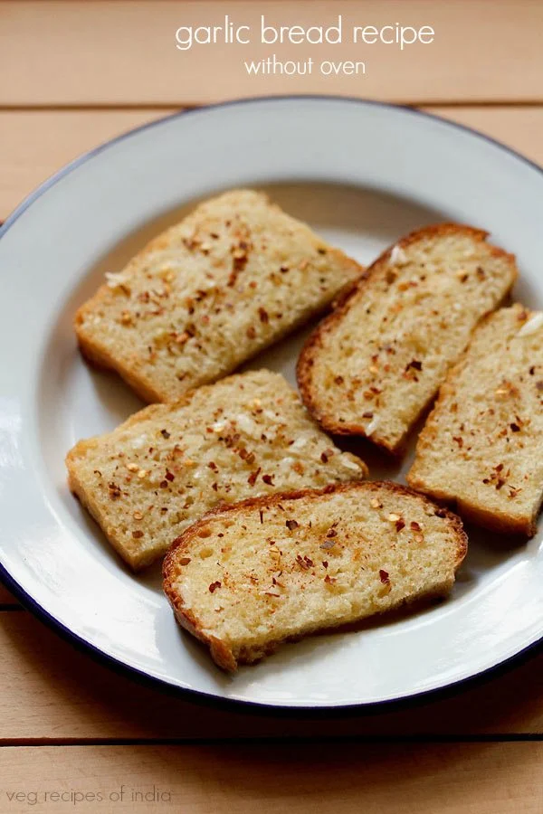

Home
Garlic Bread

Description
Garlic Bread is a popular snack made with bread slices topped with butter, garlic and herbs, then toasted until crisp and golden. This version is made easily on a frying pan or skillet, so you don’t need an oven. It is simple to prepare and gives you the same crisp, buttery flavor you expect from a classic garlic bread.
Ingredients
- Cheese
- Bread
- Garlic
- Butter
- Seasoning
Steps
- Place the bread slices on a plate or your chopping board. Evenly spread the prepared garlic butter on each of the bread.
- Heat a flat skillet or frying pan on a medium heat. When the skillet becomes hot, reduce the heat to a low or medium-low and place the bread slices on it.
- Roast the garlic bread till light golden and a bit toasted at the edges. If you want a more crisp toasted texture, then you can toast the garlic bread slices for some more minutes.
- Serve hot or warm Garlic Bread Toast, sprinkled with your favorite herb or spice on top. Here, I have added red chili flakes and some dried oregano.
For full recipe refer to the website